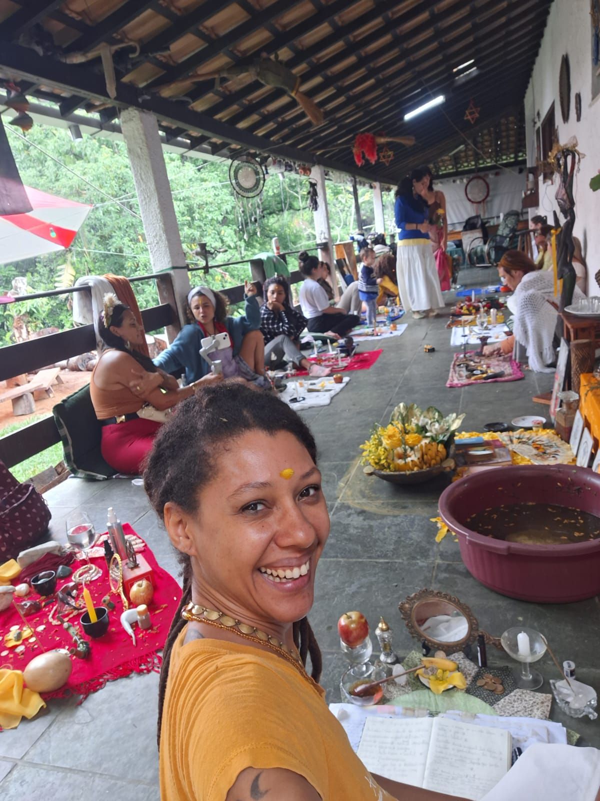
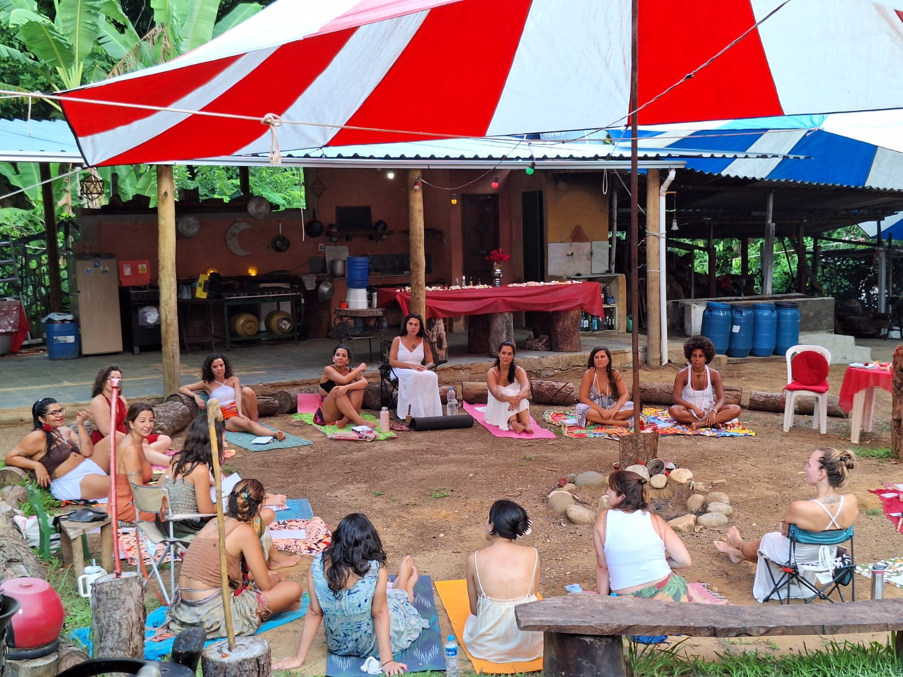

Sagrada Feminina 🌸
Um espaço de reencontro com a energia criadora. Conecte-se à sua essência através de rituais, vivências e práticas de Magia da Natureza conduzidas por Mãe Vani D’Oyá.



Agende sua experiência
As sessões são presenciais no Rio de Janeiro. Para sessões online, consulte disponibilidade.
← Voltar ao início